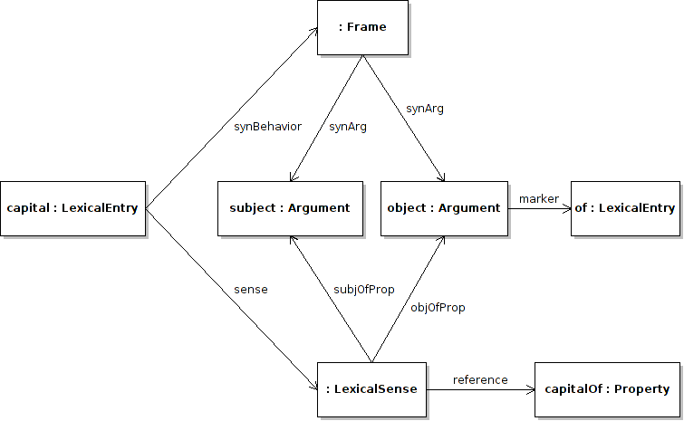

Next: Conditions Up: Syntax and Mapping Module Previous: Phrase structure and frames Contents
The mapping part of this module is primarily focussed on linking the entities in the ontology with the linguistic descriptions. This consists of primarily two tasks: describing how the arguments of an ontology predicate map to those of a syntactic frame and adding extra conditions for the applicability of a given mapping.
We shall tackle the first part of this, which requires reifying the arguments of a property. Although RDF supports the reification of statements, this is not a reification over all triples using a given property, rather over a single property. We instead introduce the idea of a semantic argument, which can be related to the model via three properties, namely subjOfProp, objOfProp and isA. The former two are used if a lexical sense has a reference to a property in the ontology, for example
:capital lemon:sense [ lemon:reference ontology:capital ;
lemon:subjOfProp :capital_sem_subj ;
lemon:objOfProp :capital_sem_obj ] .
Similarly lemon views classes as unary predicates like in other formalisms such as SWRL, the argument is then specified with the property isA
:cat lemon:sense [ lemon:reference ontology:Cat ;
lemon:isA :isa_cat ] .
In fact, lemon does not use separate elements for the syntactic and semantic arguments. This allows for much more economical encoding of arguments than in LMF, without any loss in expressivity (see section 4.1).
:capital lemon:sense [ lemon:reference ontology:capital ;
lemon:subjOfProp :subject ;
lemon:objOfProp :object ] ;
lemon:synBehavior [ lemon:synArg :subject ;
lemon:synArg :object ] .
:capital_obj lemon:marker :of .

John McCrae 2012-07-31